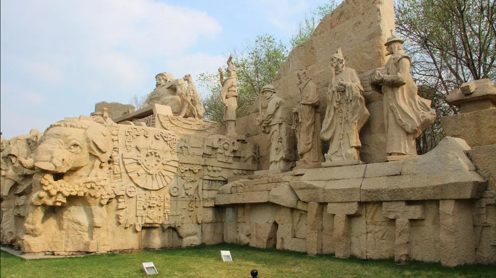
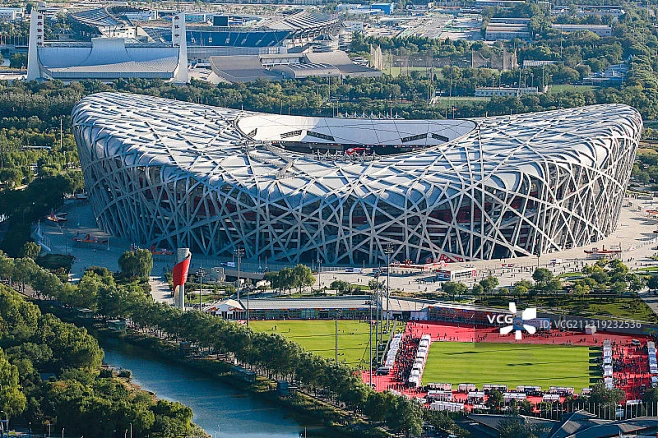
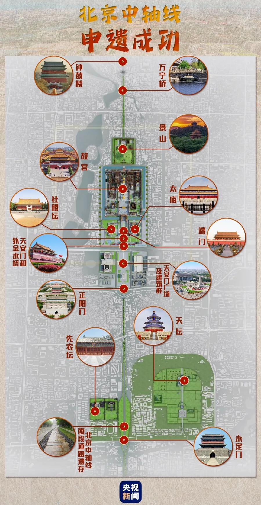

北京千年时空叙事
【开端】元大都奠基
时间：公元1267年

1267年，元大都始建，中轴线正式诞生。城市依水而建，对称布局，奠定了北京数百年的城市骨架。
【发展】明清皇城鼎盛
时间：明清时期
故宫、天坛、景山沿中轴线排布，皇权、礼制、信仰融为一体，中轴线成为国家精神的地理象征。
【高潮】现代城市新生
时间：2008年至今

奥林匹克公园、CBD拔地而起，古老轴线向北延伸，传统与现代在此交汇碰撞。
【结尾】世界文化遗产
时间：2023年

2023年，北京中轴线申遗成功。一条线，一座城，七百年文脉永续传承。